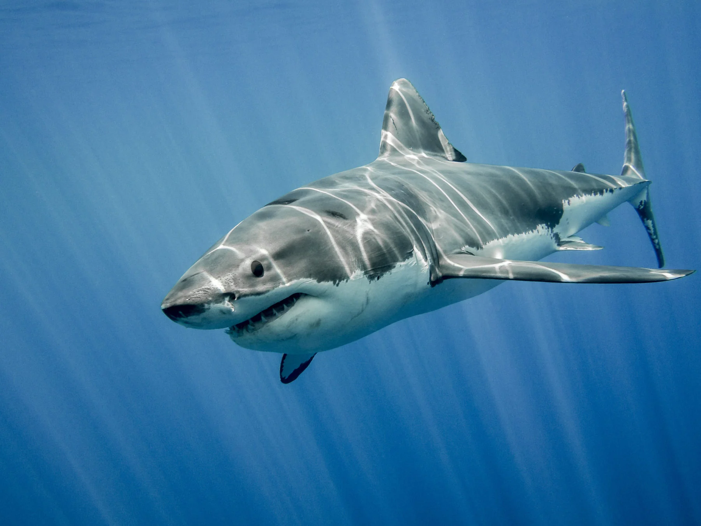
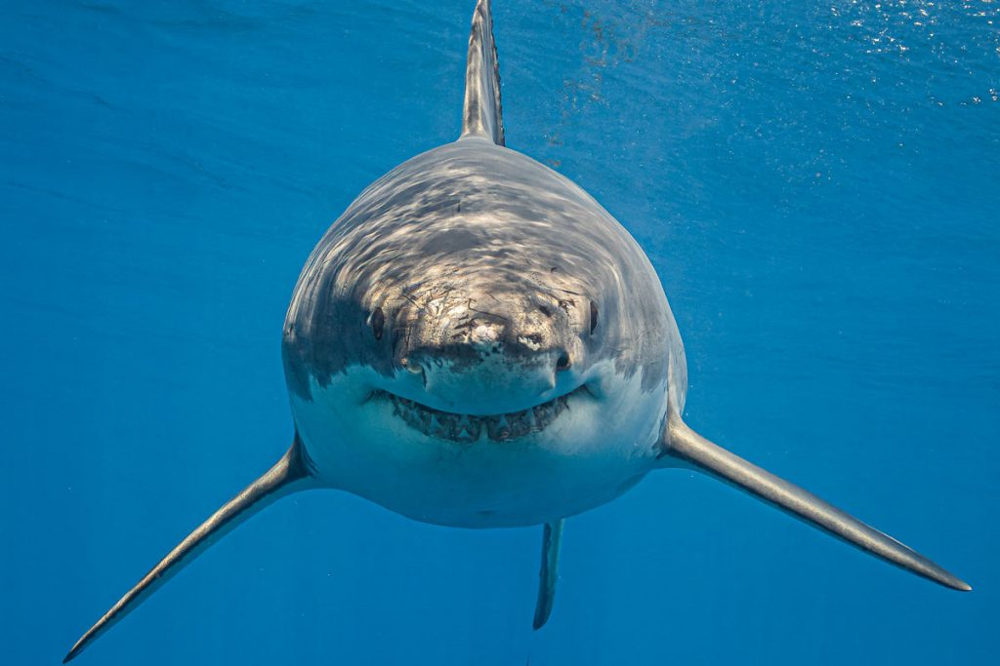
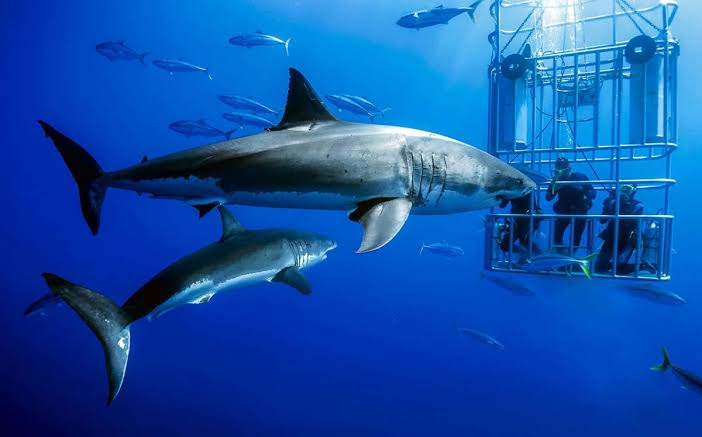

Welcome to Great White Sharks HQ
The Great White Shark is the king of the Ocean. They are the apex predator and have been around since the age of the dinosaurs.
What's New in the Great White Shark World?

Shark Facts
- Great White Sharks can grow up to 20 feet long.
- They can weigh over 5,000 pounds.
- Great White Sharks have a lifespan of about 70 years.
- They are found in coastal surface waters in all major oceans.
Are You Brave Enough to Scuba Dive with Great White Sharks?

Scuba diving near a great white shark is a thrilling yet high-stakes experience that typically happens inside a protective cage at locations like South Australia's Neptune Islands, South Africa, or New Zealand. Divers often describe the moment as surreal and awe-inspiring as the massive predator glides silently through the water to investigate. While encounters with great whites are rare and attacks on divers remain uncommon, the sharks' size and power make strict safety precautions essential—such as staying inside a cage, avoiding erratic or panicked movements, and keeping a calm, alert presence.
Check out our Latest Great White Video!
Check out our Great White Blog for more awesome content!
Our blog is a treasure trove of fascinating insights into the world of great white sharks. From in-depth articles on their behavior and biology to captivating stories of encounters and conservation efforts, our blog offers something for every shark enthusiast. Stay updated with the latest research, expert opinions, and thrilling narratives that bring you closer to these magnificent creatures. Dive into our blog and explore the mysteries of the ocean's most iconic predator! Click the link below to view the blog page.
Visit our Blog